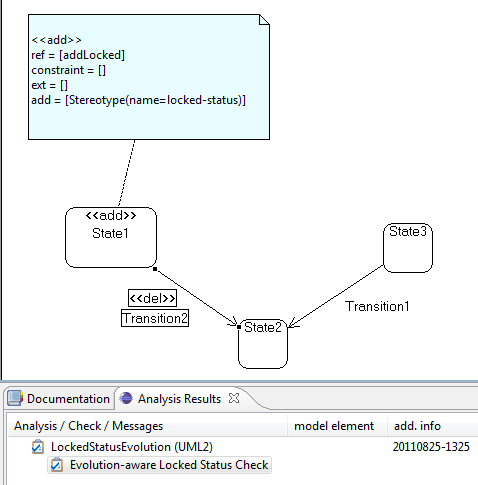
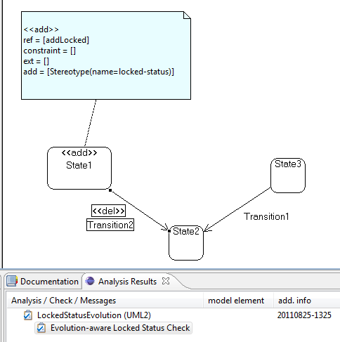

This check analyzes the evolution of UML state diagrams using the «locked-status» stereotype (cf. Ochoa et al. - Model-based Security Verification and Testing for Smartcards, 2011). States marked by this stereotype may not have any outgoing transitions.
To analyze the evolution of a model, the original model has to be secure in regards to the corresponding non-evolutionary check. To make sure that is the case please use the appropriate UMLsec smartcard checks.
Annotate the secure model with the desired evolutionary changes by using the UMLchange profile extensions. After finishing the model, create a new CARiSMA analysis on the model. Add the Smartcard Locked Status Evolution Check to the used checks and click "Run" to start the analysis.
The Analysis Results View displays whether the check was successful. If any evolutionary step results in a violation of the «locked-status» property, the resulting violation is displayed in the Analysis Results View.
The example model describes an evolution that adds «locked-status» to a state without removing its outgoing transitions.
After adding the necessary evolutionary steps to the model, the analysis reports the success of the check.
The table below explains the UMLchange syntax for new model elements of state machine diagrams. The metaclasses whose key-value pairs are simple are omitted.
| Model Element | Metaclass(if different) | Key | AppropriateValues |
|---|---|---|---|
| Transition | name | String value | |
| source | qualified name of model element | ||
| target | qualified name of model element | ||
| Transition Guard | Constraint | name | String value |
| language | String value | ||
| specification | String value |